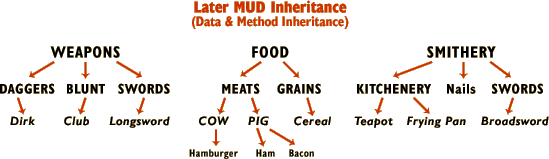

Building Blocks: Data InheritanceFebruary 14, 2002 — Welcome folks to the special Valentine's Day edition of TT&T. This time around I'm going to talk about one of the most romantic of all game design topics: data inheritance. Well, OK, it might not actually be that romantic, but data inheritance is, at last, the final topic in this first series of Building Blocks and I love seeing things through to their conclusion. It's the last discrete topic related to the creation of rooms (and portables). With it in hand, and somewhere over 18,000 words on room and portable creation now immortalized on the web, you have all the tools you need to create the background of a game.
Easy, wasn't it?
The whole idea of data inheritance comes out of C++ (1986) and other object-oriented languages, most famous among them Java (1995). It's even a topic that I've talked about before, almost exactly a year ago, in Trials, Triumphs & Trivialities #20, Hobgoblins, Part Two (2001). The older article is a great overview, even if it does detail some blue sky stuff that we never quite managed in the Skotos StoryBuilder Server. But I want to overview things in a slightly more organized manner this week, to finish off this part of Building Blocks correctly. What's Data Inheritance!?In correctly defining data inheritance, it's pretty important to start off with a definition of data. According to my American Heritage Dictionary, definition 2, data is "Numerical or other information represented in a form suitable for processing by computer." That's a pretty good definition for our purposes too. Data is what you get when take some information about some physical thing and put it into a computer program. We've actually been talking about data for weeks, namely:
All data. If that's data, though, what's this data inheritance thing? Most simply, it's saying that data in a certain object, called a child, is defined by similar data in another object, called a parent. You're probably familiar with one form of data inheritance, though it's not called such: genetics. Take, for instance, a simple piece of data like eye color. Your eye color is inherited from two parent objects: your mother and your father. Ignoring irrelevant complexities, like recessive genes and the huge complexity of DNA strands, your eye color is either based on your mother's eye color or your father's eye color. That's data inheritance. Another good analogy is the system of biological naming: kingdoms, phylums, classes, order, families, genuses, and species. For example, I, a human being, inherit data down the following inheritance tree: Animalia, Chordata, Mammalia, Primates, Hominidae, Homo, sapiens. Animalia provides data on what I need to eat (other organisms). Chordata provides data on my bodily structure (centered on a spinal cord). Mammalia provides data on the temperature of my blood (hot) and whether I have hair (mostly). By the time we get down to Hominidae, we find data on my general size and weight. Sapiens provides data on my intelligence and reasoning structure. And then, at the bottom of the whole structure, is the individual object: me. In this overview of data inheritance I should mention one other concept: overloading. In short, even though I may inherit data from anywhere along my inheritance tree, as an individual I may "overload" some of that data, replacing the generalities with very different specifics, for myself. Some things can be overloaded, and others can't. For example, though the average IQ score for Home sapiens might be 100, I like to think I personally have overloaded that data with a considerably higher number. Conversely, my average cellular density is probably inherited from the fact that I'm a Chordata or a Mammalia, and individual humans don't get much variety there. We'll get back to kingdoms, phyllums and the rest down the road, because I think they provide a really great metaphor for data inheritance in general. An Interlude: Method InheritanceIn talking about inheritance it's useful to draw a sharp line between data inheritance, which we're talking about today, and method inheritance, which we're not. I tried to be careful in my discussion above, but I know that some method inheritance got muddled into my basic explanations. Data inheritance is inheriting specific information, like height or luminosity. Method inheritance is inheriting specific ways to do things, like how to photosynthesize or what to do when someone sets you on fire. Method Inheritance isn't too important for creating basic objects, until you get into the whole question of how to make those objects do interesting things, and that's the core of one of my future sets of Building Block articles — not this one. Data Inheritance in Online GamesYou're probably thinking right now, "Ah, data inheritance, I understand, and that's very nice in a computer geeky sort of way, but what's it's applicability to online games?" The answer is, "Quite a lot." Data inheritance has been used in online games since almost day one, even appearing in a basic form as part of Richard Bartle's first MUD, in 1978. The thing is, in an online game you're trying to creating a virtual representation of the real world. Or, alternatively, you're trying to create a virtual representation of not-the-real-world, but not-the-real-world's probably got lots in common with the real world due to similar physical laws. That means that you're going to be creating lots of objects, and physical objects tend to be more similar to each other than different. It's why there is a biological classification scheme, because you can look at a Siamese Cat and a Persian cat, and say, "Those are very similar." And you can look at a Siamese Cat and a German Shephard, and say "Those are fairly similar". And you can look at a Siamese Cat and a Kangaroo, and say "Those are somewhat similar". And you can look at a Siamese Cat and a Clam and say "Those have some features in common". And you can look at a Siamese Cat and a Venus Fly Trap and say "Those have a few features in common." And, the similarity of physical objects doesn't apply just to living creatures, but to everything in our world. This similarity occurs because there are only so many types of material and only so many shapes they can be put into. I have at least a half-dozen different types of bookcases at my house: seven-foot pine monstrosities, six-foot cheesy press board book cases, and stubby three-foot foot book cases among them. I've had bookcases made of slats of wood and cinder blocks, and bookcases built into my bed, and they all had characteristics in common. Likewise, all automobiles have some similarities, and cars and trucks are still very similar, and car and buses less so, and car and airplanes even less. But everywhere in the physical worlds, there's more similarity than difference. And that's what you're trying to represent in your virtual world. Because of that, inheritance comes naturally. It's how you make the real world virtual, without driving yourself crazy by duplicating work. Most frequently data inheritance is used to create objects. I make a dagger, so I subclass it off of small bladed weapons, which is subclassed off of bladed weapons, which is subclassed off of weapons, which is subclassed off of handheld objects, which is subclassed off of physical objects. You end up drawing out huge inheritance trees, which are always complex, and sometimes can be inconsistent. Here's how I drew it out last year, when I was talking about both data and method inheritance:  Although complex and sometimes inconsistent, data inheritance is a beautiful thing because it saves you the work of defining the same thing again and again, and also ensures that similar objects are usually similar to each other ... when you manage to avoid those inconsistencies which I warn against. Overall, a cool thing. Data Inheritance & RoomsData Inheritance for portables seems pretty good and natural. After all, objects do naturally fall into classifications and subclassifications. We see that all the time in the real world, and there are lots of levels of subcategories, so it's easy to implement within a game. But, what about rooms? Generally I haven't seen rooms take advantage of data inheritance, though it can be really useful for them too. At the least, all of the rooms in an individual game will probably share some characteristics in common and you might as well note that as a room "kingdom". Below that, rooms will probably fall into a few "phylums", such as inside rooms and outside rooms. And, in a large game you might have other types of rooms (kitchens, bedrooms, bathrooms) which you want to share characteristics, or alternatively rooms in a specific area (the King's quarters, the servants' quarters, the Royal Gardens) which should. As with portable data inheritance, you'll save time and create consistency. The Wild World of Data InheritanceBefore suggesting how to use data inheritance in your game, I want to offer one last thought: data inheritance can be used for more than just physical objects. If your help files are all objects in your game, they can inherit specific characteristics. Ditto for verbs; not only could verbs consist of a "kingdom" which gets inherited from, but you might have "phylums" of social-verbs or combative-verbs or verbs-that-require-you-to-be-touching-the-other-fellow or whatever. Whether you can usefully use data inheritance for these other things depends upon the architecture of your game, but if you can, don't squander it. Inheriting Data in Your GamesAlright, so let's put all of that philosophy to specific use by actually doing some data inheritance. I neglected to talk about data inheritance when I first discussed rooms in Trials, Triumphs & Trivialities #48, Building Blocks: Rooms. I did remember to mention it last week, in Trials, Triumphs & Trivialities #59, Building Blocks: Portables. Those two sorts of objects will form the bases for our inheritance usage discussion, below. In using data inheritance, the best method is to create a chain of objects which lead down from the most general possible type of object to the very specific object that you're creating. It might seem a real pain when you just want to create a specific object, and you want to do it now, but I suggest you go ahead and create the chain correctly, because it will pay off the further you get into your world design. In the past I've suggested using only one level of inheritance, but the further we get into making games here at Skotos, the more it becomes obvious that multiple levels of inheritance are really useful, so what the hell .. Though I talk about creating objects throughout this discussion, in actuality, the more you build out an inheritance tree, the more you'll just be linking to already extant objects instead. 1. Decide Upon a Kingdom: Very General Data Types The first thing you need to do is decide the general type of data you're trying to create. For portables and rooms, this will be a physical object data type, but if you were creating help files or verbs, you'd probably link things up to a totally different kingdom of data. This type of object is so low-level that a normal game developer should never have to mess with it. It should be supplied by the game's creators. 2. Decide Upon a Phylum: Very General Object Types Next you need to figure out the most general possible type of object which your specific object will descend from. For example, if you were creating a high-backed wooden Arts & Crafts chair, you'd probably choose "furniture" as your phylum. Other possible phylums, for different specific objects, might include "food", "weapons", and "other handheld items". If you're creating a room then your phylum is simply that: "room". Or, most specifically, "the type of room that would appear in your game", as different games will support very different types of virtual reality. When you start creating this first level of inherited object, and when you create all the ones that follow, you should remember one very crucial piece of advice: don't fill in all the blanks. For example, say you were creating a "food" object. Two bits of data you might want to put in such an inherited object are: how nutritious the food is, and how hard the food is to eat. Those are general bits of data that have to do with food, and that you want to make darned sure are filled in. However, you shouldn't feel the need to fill in how much the food weighs or how big it is or what color it is or whatever. That data isn't specific to the idea of food, and thus would be better filled in by things lower on your inheritance chain or by a specific object itself. For example, a "bread" object might define general size, and a "wheat bread" object might define color. No point in trying to define them now. 3. Decide Upon a Class: General Object Classifications It's at the third rank of the data inheritance ladder that things start to get really subjective. I suggest that your class should be a "General Object Classification", but what exactly does that mean? You should be creating the object classification which most broadly defines the specific type of object you'll be creating, but different creators might take that to mean various things. If I was trying to create that high-backed wooden Arts & Crafts chair I could choose my class to be "chairs" or (more-broadly) "furniture that you sit in" or (orthogonally) "Arts & Crafts furniture". Which is correct? In truth, all of it. Just make sure your decisions about what goes at what level of your inheritance tree are consistent, no matter how many builders you have. If you're creating inherited rooms, this is probably the level at which you create different room types for inside and outside. 4. Decide Upon a Species: Platonic Objects After you've got your most general classification I suggest jumping all the way down your inheritance tree to the general description of the very specific item that you'll be creating. This is my archetypical high-backed wooden Arts & Crafts chair. Or a silly three-bladed sword. Or whatever. It's your object without any individual characteristics which make it special. Rooms may skip this step altogether, though some locales with multiple very similar rooms may take advantage of it. For example, in Castle Marrach we have five identical guest rooms, whose only differences are the color of the portal that you use to leave. Those would be good species ... but are fairly rare examples of rooms that aren't each and every one totally unique. 5. Connect Up Your Individual: Specific Items And, finally you can create your specific item. After step four, creating your platonic object, you might be done. You clone that high-backed wooden Arts & Crafts chair and you have a great specific item. However, you might also want to make a few changes, for example a high-backed wooden Arts & Crafts chair with a carving in the arm. If so, then you need an individual. For rooms, this is where your specific room goes, since they almost all tend to be unique. As I mentioned above, you might have skipped species altogether for rooms. 6. Decide Whether You Need Orders, Families, and Genuses Now you've got an inheritance chain with a bunch of holes in the middle, but you know where you're going from and where you're going to. You should fill in those three (or more) spaces in between if and only if you need to. Again, the biggest question is one of consistency in your overall world development. Consider my example of a high-backed wooden Arts & Crafts chair. If my class was "chair", I'd probably have an order of "wooden chair". Alternatively if my class was "furniture that you sit in" I might have an order of "chairs" and a family of "wooden chairs". Rooms might fill in these spaces with types of rooms (bedroom, etc.) or locales of rooms (the Royal Garden), as I discussed earlier.
With all these confusing possibilities discussed, here's a few specific examples of what I think might be good inheritance trees for portables and rooms:
7. Finding the Devil in the Details All this data inheritance is well and good, and you'll probably be set now to use it to inherit simple variables, such as how big something this, how nutritious it is, how much light it gives off, and what not. However, I've also talked about data inheritance in one other place: Trials, Triumphs & Trivialities #50, Building Blocks: Details. Let me reiterate what I said then: you should use data inheritance to inherit details held in common. This lets you describe common details in parent objects without having to write them again and again — and it may be the biggest win in data inheritance. You should be creating these inheritable details at every level of the inheritance chain. For example, consider my guest room. All rooms would have the detail "middle" or "center" so that you could stand in the center of the room. All inside rooms would have "walls", "ceiling", and "floor". (As opposed to outside rooms which, in Castle Marrach at least, might have "snow" and "wind" details.) Then, hopping down to the guest rooms themselves, they all have a bunch of details in common like "window" and "bed". It's only the "portal" that's different in individual guest rooms. The same ideas clearly apply to portables. All blades are going to have, well, "blades" (and "hilts" and "grips" and "pommels"). All container furniture should have "doors". You get the idea. And, thanks to the idea of overloading, you can build in those default details, but still change them when required. Does a certain room in your house have "ugly carpet" while the rest is "american oak hardwood"? No problem, just make that "american oak hardwood" a detail in your standard inside room, and overload it with "ugly carpet" where required. The Future of Building BlocksAs I mentioned at the start of this column, this week finishes off my discussion of the Building Blocks underlying the first major category of online game development: physical, non-volitional objects. Which is to say portables and rooms. However, there are other broad categories of development which I plan to also look into, including physical, volitional objects, with Building Blocks of brains, mobiles, CNPCs, and characters; and dynamic objects, with Building Blocks including scripts, events, signals, and method inheritance. We'll get there, probably in March or April. In the meantime I plan to take the next one to two weeks to make the abstract concepts of the first seven building blocks very concrete by talking about how physical, non-volitional objects are created using the Skotos StoryBuilder Server. I think it'll be a useful example, even for those of you creating your own games. See you in 7.
|
|||||||||||||||||||||||||||||||||||||||||||||||||||||||||||||||||||||||